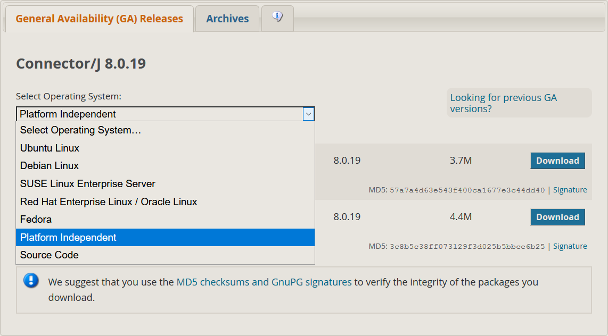
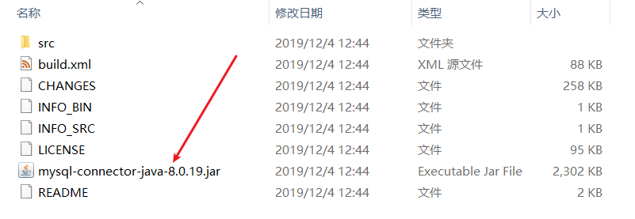
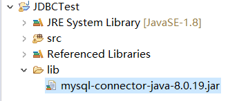
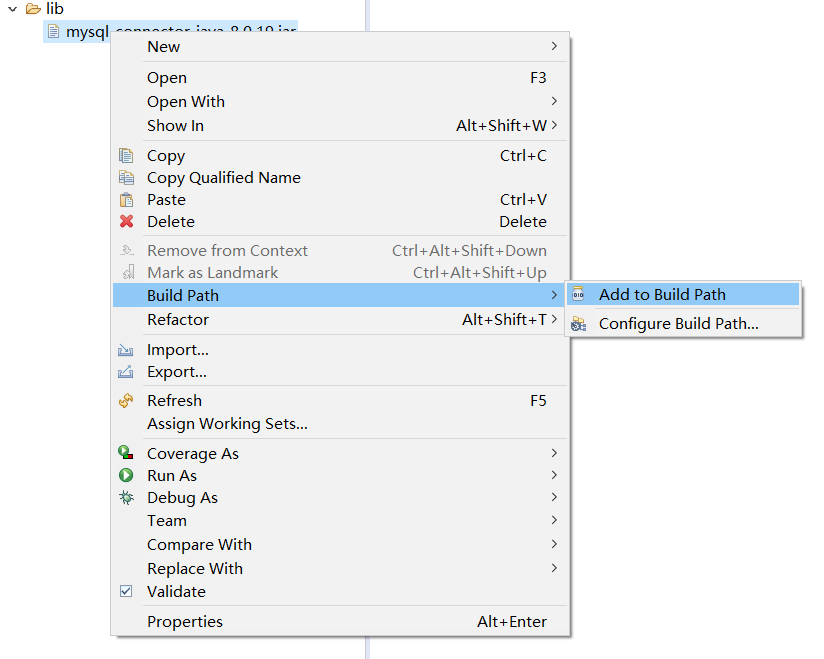
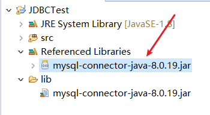

下载JDBC
下载地址：https://dev.mysql.com/downloads/connector/j/
选择 Platform Independent
因为我是Windows环境，所以下载zip包

解压压缩包

导入JDBC
IDE用的是eclipse
在项目下新建一个文件夹（例如：lib），将jar文件复制粘贴到文件夹下

添加到路径

成功后包会添加到 Referenced Libraries 中

JDBC的使用
连接数据库
1
2
3
4
5
6
7
8
9
10
11
12
13
|
public static final String URL = "jdbc:mysql://localhost:3306/<数据库名>?serverTimezone=GMT%2B8";
public static final String USER = "root";
public static final String PASSWORD = "123456";
public static void main(String[] args) throws Exception {
Class.forName("com.mysql.cj.jdbc.Driver");
Connection conn = DriverManager.getConnection(URL, USER, PASSWORD);
}
|
Statement
1
2
3
4
5
6
7
8
9
10
11
| String param = "admin";
String sql = "select * from test where username='" + param + "'";
Statement stmt = conn.createStatement();
ResultSet rs = stmt.executeQuery(sql);
while (rs.next()) {
System.out.print(rs.getString("id") + " ");
System.out.print(rs.getString("username") + " ");
System.out.println(rs.getString("password"));
}
|
PrepareStatement
1
2
3
4
5
6
7
8
9
10
11
12
| String param = "admin";
String sql = "select * from test where username=?";
PreparedStatement pstmt = conn.prepareStatement(sql);
pstmt.setString(1, param);
ResultSet rs = pstmt.executeQuery();
while (rs.next()) {
System.out.print(rs.getString("id") + " ");
System.out.print(rs.getString("username") + " ");
System.out.println(rs.getString("password"));
}
|